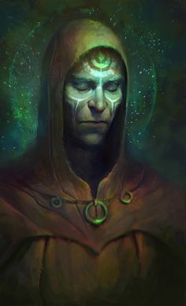
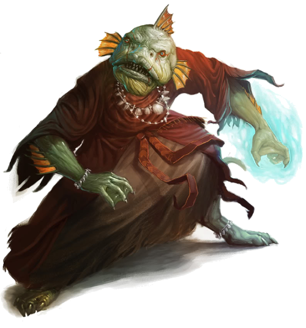

Species
Human
blah blah blah.
Physiology.
Society.
Species Ability
- Wound Threshold: 10 + Brawn
- Strain Threshold: 10 + Willpower
- Starting Experience: 110 XP
- Special Abilities: Each type of Human has its own special abilities, listed in the corresponding entry.
Terran
The planet Earth is a recent addition to the galactic stage, but they're making a splash in the Seven Wastes sector as adventurers and travelers. The diaspora of Terrans is no longer being forced by the Hegemony, and yet it continues as strong as before since the liberation of Earth. Terrans are a hearty people, possessed of a desire to learn and a willingness to make do that other species lack. Even separated from their homeworld, they share enough cultural identity to make a name for themselves.
- Starting Skills: Terrans begin with one rank in each of two different non-career skills. They still may not train these skills above rank 2 during character creation.
- Ready for Adventure: Once per session as an out-of-turn incidental, a Terran may move one Story Point from the Game Master's pool to the Players' pool.
Grover
Grovers are a race of humans from a planet deep within the Philosopher Kingdom. They are caretakers of the Sphinx's wishes, a client race of the demigods who know everything. Not all Grovers choose to serve the Sphinx, though – there are millions who travel live independent lives. Yet even these free Grovers hold the Sphinx in high regard, for their world's place in the universe is at the feet of the Philosopher Kings.
Slightly green in hue as humans go, Grovers usually have brown, black, or auburn hair, with eyes that are always a deep jade. Their blood contains far more oxygen than most Human blood, making them ideal donors.
Grovers are experts in information, possessed by a conversational style that always draws out more than they reveal. While tests of individual Grovers reveal no unusual psionic energy, large groups of Grovers do generate ripples against psychic backdrops. Whether their inability to be read, and their innate ability to read patterns in both faces and texts, is magic in nature or mundane, Grovers are well regarded as investigators and brokers.
Special Abilities.
- Starting Skills: Grovers begin with one rank in Negotiation. You still can't train Negotiation above rank 2 during character creation.
- Close to the Vest: A Grover's Motivations may not be revealed by Advantage or Threat during social encounters.
- All is Revealed: A Grover adds b to all rolls to gain information.
Naming Conventions. Grover names sound French or Italian to Terran ears. They tend to follow the convention of a given name at birth and a surname reflecting the leader of their extended family unit. The leader of the family unit tends to be whomever has the greatest standing with the family's Sphinx.
Name:
Spacer
Many humans grow up so far removed from any other culture that their culture becomes that of the wandering byways of space. Spacers are humans who have been away from a homeworld for so long that they have no real knowledge of where their ancestors came from, but instead are part of an amalgam of human races who share a culture of living on stations and starships and the lost realms between the stars.
- Starting Skills: Spacers begin with one rank in Piloting. You still can't train Piloting above rank 2 during character creation.
- Jump Up: Once per round during your character's turn, your character may use this talent to stand from a prone or seated position as an incidental.(As the Talent, doesn't count as a Talent.)
- Spacer Augmentations: Spacers only take 1 wound per round when exposed to a vacuum, and 1 strain per round when suffocating.
Atlantean
Paragons of an ancient empire, Atlanteans are thought to be the heirs of some progenitor race. They claim to be the progenitor race, but scholars wonder where all that power went. The Atlanteans are a powerful species and a powerful empire, to be sure, but nothing that compares to the abilities spoken of in ancient myth and legend.
Physiology. Atlanteans look like Humans, but taller (usually between 6'6" and 8' tall), and generally better looking. Their DNA, however, is quite distinct. They evolved long ago to live off of ambient magical energies, drawing sustenance from parallel dimensions, solar energy, and background radiation. They have no need to eat, sleep, or breathe. Indeed, Atlanteans are studied for their perfection, as other species would love to live like they do. To date, the ability of Atlanteans to draw their energy from around them is ill understood (even by Atlanteans), and attempts to replicate it have failed miserably.
Society.
Species Ability
- Wound Threshold: 12 + Brawn
- Strain Threshold: 12 + Willpower
- Starting Experience: 90 XP
- Starting Skills: Atlanteans begin with one rank in Athletics. You still cannot train their Athletics above rank 2 during character creation.
- Perfection Manifest: Atlanteans do not need to eat, sleep, or breathe, and they are unaffected by toxins and poisons.
Naming Convention.
Chthonian
Reformed. Or so they say. Leaders of the mighty Commune. There was a time when the Chthonians consumed galaxies, spreading their empire in an endless quest for new sentient species to consume. Their endless hunger created weapons of terrible destruction and subjugation. They uplifted the Hulking Simians, turning them into fearsome warriors and strategists. They created the Oblex from the remnants of their brain pods, stealthy liquid assassins. But it was the Shadowfoot Halflings who ultimately changed the Commune into a... more civilized empire.
The Chthonians have not given up the conquests made when they were warlords. Their Commune is still vast, their weapons still very present. But their vassal species are now citizens, they no longer conquer mindlessly, and they no longer eat brains of the sentient. Usually.
Physiology. Chthonians are born as tadpoles, tiny little creatures birthed from a monster egg sac from an elder brain into a pool of viscous fluid. Here, sitting in a pool with thousands of their siblings and the hundreds of brains that make up the elder brain, they learn the basics of the universe through psychic osmosis, until their squidlike form is big enough to attach to a body.
In the old days, Chthonians would attach their squid-form to the a humanoid body (after the head was removed) and take control of the body, slowly changing the body to be grayer, smoother, slimier. Now, they use empty clones about the size of a Human.
The squid-like portion of Chthonians have no sex, but the bodies they take over do. Internally to the Commune (even among Shadowfoot Halflings or Oblex) they generally don't express any form of gender. However, Chthonians who travel amongst other cultures will often take on the popular affectations and presentation of the gender of their body.
Even after being attached to a host, a Chthonian head will keep growing. After about a hundred years, it will be too large for a torso. Its flesh will become less and less pliable. Eventually, the Chthonian will (if it can) remove itself from its host and be added to a brain pod. There, the tadpoles will feast upon its face and skull, until only the brain remains. This brain becomes part of the elder brain, a community of minds thinking in tandem. The individual identities of an elder brain can live for hundreds of years, and an elder brain as a whole can live indefinitely.
The primary diet of Chthonians is living brains. Sentient brains taste better, the smarter the person, the tastier. However, modern Chthonians usually eat the brains of animals – dolphins, elephants, Arcadian deer, displacer beasts, etc. There is also a budding industry of cloned brains with implanted memories. Many Chthonians will pay good money for a sentient brain given willingly – a dying patriarch of a poor family may offer themselves up as a meal, knowing that the price of their brain will bring food to their family's table for months.
All Chthonians are possessed of some psychic potential. They can communicate telepathically with fellow Chthonians within twenty or so feet, and can train that potential further. This psychic potential also makes Chthonians naturally resistant to magic, and additionally, they can channel it to become mighty archmages themselves.
Society. Chthonian society is one of paradox. It is a society that values conformity filled with people of no distinguishing characteristics who want, more than anything else, to be recognized as an individual. It is a society where everybody's instinct is to eat the brains of every non-Chthonian they meet, but one that is currently striving to atone for the atrocities of their ancestors and make their great Commune a force for justice and freedom in the universe. This paradox, this tension, defines the Commune. Everybody is trying to be noticeable, but without seeming weird. That conflict infects fashion, bureaucracy, even the laws of the land. Excellence is to be lauded, oddity is not.
Naming Convention. A Chthonian's full name includes the name of the podmate who got a body before them, and after them. While the tadpoles emerging from a brain pod are one unbroken chain, and as such referring to both the first and the last is superfluous, it is tradition. It ties you to two other people, your closest 'siblings'.
Name:
Species Ability
- Wound Threshold: 9 + Brawn
- Strain Threshold: 10 + Willpower
- Starting Experience: 100 XP
- Starting Skills: Chthonians start the game with one rank in Coercion. They still may not train Coercion above rank 2 during character creation.
- Dark Vision: When making skill checks, Chthonians remove up to bb imposed due to darkness.
- Magic Resistance: Upgrade the difficulty of any spell targeting the Chthonian.
- Natural Telepaths: Chthonians may communicate telepathically with other Chthonians within short range.
Dwarf
There is no force in the universe stronger than a dwarf. They are a race of perseverence and commitment unmatched anywhere. The oath of a dwarf is certainty. A culture built around this kind of fortitude ends up becoming a pillar of the galaxies.
In addition to the value of loyalty, a Dwarf values pragmatism. They are not adverse to aesthetics or ceremony, because those things have their uses and their value, but pomp and circumstance are not their way. They choose the best option for all possible scenarios, and then commit to it. If something needs to be cut, or left behind, or abandoned, they do so, ruthlessly and without regret - everything should be useful, and that which is not is disposed of.
The original home planet of the dwarves is unknown. The legends tell of a time when the god Moradin fashioned the dwarves out of matter created during the First Big Bang. Dwarves have had less genetic drift than other species - each subspecies of dwarf is still very close to each other - and yet, those tiny differences mean everything to people who make every promise for life.
Physiology. Dwarves are built for hardiness. Their relentless focus on pragnatism means they have spent millenia living in uncomfortable places, if that's what their task demanded. Their genome shows signs of genetic modification, likely at their own hand. Their bodies have redundancies unseen in species save for those creatd for war. Redunancies such as extra veins and arteries (and the ones they have can seal themselves), dense bone structures, redundant glands, and a six-chambered heart.
They are a squat species, generally 4' to 5'2" in height, but upwards of 150 to 200lbs. They usually live between three and four hundred years in length, though most wealthy dwarven communities have access to plenty of age-enhancing technologies.
Society. Every body of people in Dwarven society tends to value outcomes and autonomy. Loyalty to each other and a loathing of inefficiency means people are trusted to do their jobs. Bureaucracy where it can be found has been proven time and again to give value to the community. Laws are well-documented and made with an attempt to be fair, but any given interpretation can be overridden by a tribunal or community leader if need be. Ultimately, Dwarven society reflects practical choices: if the financial, magical, environmental, and societal costs make sense for a factory to be built in the middle of a residential neighborhood, then the neighborhood will be displaced. While aesthetics and form are recognized as having value, function always reigns supreme.
Species Ability
- Wound Threshold: 10 + Brawn
- Strain Threshold: 10 + Willpower
- Starting Experience: 90 XP
- Special Abilities: Each type of Dwarf has its own special abilities, listed in the corresponding entry.
Cog Dwarf
Cog Dwarves are counters. They are archivists, quartermasters, accountants, and tabulators. Cog Dwarves are, even for dwarves, keen on first establishing the known facts. What is must be truly understood before what might be can be tackled. They are not myopic about inventory to the point of impracticality, but a lack of quantification of their own assets (both literal and abstract) will drive them mad.
Two thousand years ago, the Cog Dwarves sold their homeworld to the Aven and joined the Hegemony. For what, nobody knows. But they have made themselves right at home in the Hegemony, with their nature to count a perfect match with the Aven's particular way of looking at property ownership.
Cog Dwarves tend to be bronze in complexion, with hair ranging from red to brown to black. Unlike the Hulk Dwarves, the women don't have beards. Their eyes tend to brown or black, though a few are born with eyes like green emeralds, known as "emerald children".
Cog Dwarves tend to favor adornments woven into their hair or worn as bracelets or brooches, because piercings and tattoos are seen as commitments, and a changing fashion should not be promised for life. Their clothes tend to be very functional, ready for their jobs at hand. Most situations involving 'nice clothes' are dealt with by adding a fair amount of jewelry to their newest or most expensive regular clothes.
- Starting Skills: Cog Dwarves begin with one rank in Negotiation. You still cannot train their Negotiation above rank 2 during character creation.
- Dark Vision: When making skill checks, Cog Dwarves remove up to bb imposed due to darkness.
- Tough as Nails: Once per session, a Cog Dwarf may spend a Story Point as an out-of-turn incidental immediately after suffering a Critical Injury and determining the result. If they do so, they count the result rolled as “01.”
Naming Conventions. As a race, Cog Dwarves are obsessed with their family tree. A Cog Dwarf who can't trace there lineage back at least 2,000 years is viewed with suspicion. As such, the notion of a family tree is a rather expansive one. As such, family names tend to include an adjective for a given branch. You are not just Emmita of the Zenith, but of the Dawning Zenith, as distinct from the August Zenith.
Name:
Elf
 Elves are an ancient race, masters of ancient magic. They are the only species capable of traveling via The Ways, and their ability to exist in places of dangerous purity is unsurpassed. They are curious beings, driven by purpose but enabled by their long lives to take moments, sometimes years, to enjoy themselves and to reflect.
Elves are an ancient race, masters of ancient magic. They are the only species capable of traveling via The Ways, and their ability to exist in places of dangerous purity is unsurpassed. They are curious beings, driven by purpose but enabled by their long lives to take moments, sometimes years, to enjoy themselves and to reflect.
All elves once originated on the lost planet of Avalon, though that was tens of thousands of years ago. The species of elves have since diverged, yet more than any other species, they have a respect for each other, no matter their culture or nationality.
Physiology. Elves are exemplars of primal beauty. They are never ugly, merely haunting or too beautiful, aesthetically compelling even to races wholly alien to Elves (like Vrar or Chthonians). They are a little shorter than Humans, between 4'10" and 6', and lighter, weighing between 100 and 160 pounds. Even without age-enhancement technology, Elves live between four and six hundred years. Elves exhibit even less sexual dimorphism than Humans, with the only differences being males weigh ever so slightly more, and females tend to live a few decades longer.
Society. Elven society tends to value tradition above all else. Whether this is because they are stuck in their ways or taking the long view depends on who you ask. Held positions, whether appointed or elected, tend to be measured in decades. Projects are undertaken that may not see completion for a century, as a matter of course. Change is viewed as inevitable, but haste is viewed with suspicion.
Species Ability
- Wound Threshold: 9 + Brawn
- Strain Threshold: 11 + Willpower
- Starting Experience: 100 XP
- Special Abilities: Each type of Elf has its own special abilities, listed in the corresponding entry.
Summer Elf
Summer Elves are beings of faith. No matter their walk in life, the Summer Elves are always mindful of their oaths to and relationships with their pantheon. This serenity and sense of place gives Summer Elves an inner strength that other Elves may lack, and a social grace that parallels their agility.
Most Summer Elves are citizens of the Federation, a council species found on all government ships. Their obligations of faith work in concert with the methods of democratic expansionism pursued by the Federation. Those few Summer Elves not raised in the Federation often chafe at the assumptions made by others about their status as a Federal Elf.
Summer Elves have a very narrow band of coloration, either very blond or black hair, and skin ranging from very pale to dark brown. Their eyes are either brown or blue. They generally lack body or facial hair.
Federal Elves tend to dress in crisp, formal robes. The robes vary in color, but are usually mostly monochromatic (with some shade differences within the outfit). They tend to favor jewelry on the neck and wrists, with none on the face.
- Starting Skills: Summer Elves begin with one rank in Discipline. You still cannot train their Discipline above rank 2 during character creation.
- Serenity of Purpose: Summer Elves gain Charm as a career skill and begin with one rank in Charm. You still cannot train their Charm above rank 2 during character creation.
Naming Conventions. Summer Elves take surnames describing a constellation or stellar body visible from their family home. The 'family home' is an old place, and the adoption of a new family home is akin to starting a new family. Summer Elves are not usually named by their parents until they are twenty or thirty, when a name befitting their personality and aesthetic can be decided upon.
Name:
Halfling
All Halflings have emerged onto the universe's stage as clients of greater empires. Halflings are almost as ubiquitous as Humans, and yet none are the leaders of an empire of their own. Always in the shadow of another species, they as a people are fierce yet cognizant that they have alway survived standing behind somebody else.
Nobody knows from where the Halflings originate, and honestly, nobody really cares. Halflings are focusd on the present, on living their lives today and now. And since they've never been the center of a culture of great might, nobody else cares to dig up their old artifacts.
Physiology. Small in stature, Halflings range from 40 to 45 pounds, between 3 and 3'6". Young Halflings start lean, but they tend to gain weight as they age. Females tend to be slightly taller and heavier than the males. The Halfling lifespan is only about 60 years, but Halflings are incredibly receptive to rejuvenative technologies and magics.
Society. Halflings exist as vassals of other species. Whether that's genetic, cosmic circumstance, destiny, or something else, nobody really knows. And yet. Halflings have never carved out their own turf on the universe's map. Their societies reflect this. Halflings tend to build their communities and customs as appendages on the inner workings of larger cultures. Their customs tend to be variations on the pattern established by their patrons.
Yet Halflings are always focused on community. Friends, family, brethren. Halfling society, whatever norms its established under, always values a welcoming hearth, an inviting home, and the value of good company.
Species Ability
- Wound Threshold: 11 + Brawn
- Strain Threshold: 9 + Willpower
- Starting Experience: 100 XP
- Small: Halflings have a Silhouette of 0.
- Special Abilities: Each type of Halfling has its own special abilities, listed in the corresponding entry.
Shadowfoot Halfling
The Shadowfoot Halflings have always existed in the Commune. Originally, as slaves to the Chthonians, before eventually earning their independence. Their underground network of freed slaves, terrorists, and abolitionists, informs their culture to this day. Even as freed members of the Commune, many holding positions of great importance, as a people they still remember when they were second-class citizens of the Chthonians. And their food.
The Shadowfoot should have been extinct long ago. The fact that they survived in the face of the Chthonian Commune's purges of hunger is a miracle. The Shadowfoot Halflings know it is because they were able to keep themselves invisible. Not just through acts of stealth, but through magic, social engineering, and engineering. Shadowfoot Halflings believe in hiding from the world until they feel there is opportunity to reveal themselves.
Commune Shadowfoot tend to dress in very simple clothing. Historically, they favored blacks and dark purples, though reds and whites have become more popular as they have taken their place as full citizens of the Commune. Halflings favor pouches and purses to pockets, wanting to be able to shed weight as quickly as possible should they need to.
- Starting Skills: Shadowfoot Halflings begin with one rank in Stealth. You still cannot train their Stealth above rank 2 during character creation.
- Nimble: A Shadowfoot Halfling may purchase an extra maneuver for 1 strain, if they use that maneuver to disengage from an adversary with a Silhouette of 1 or greater. They still may not take more than two maneuvers in a turn.
- Lucky: Once per session, a Shadowfoot Halfling may reroll any dice in a dice roll that do not show a t or d, either a roll they made, or one that was made targeting them.
Naming Conventions. Shadowfoot Halflings are named when they have a tale worth telling. Those who are present then give them a name. Who they invite to the telling is a delicate balancing act: they want people they trust to give them a good name, but also people of sufficient import in their community that the name will stick. They take the names of their mother and father's clans (often the same).
Name:
Kua-Toa
The Kua-Toa are not a bright people. Not merely not intellectual, they are often perceived by their fellow species as just dumb. Many rise above this prejudice, but the stereotype remains. In the Federation there's a phrase for acting stupid: "Are you breathing water?"
And yet, Kua-Toa have made their mark on the stage of the universe. For they are natural practitioners of magic. Capable summoners, imbued with innate power when it comes to magic. And more importantly, for some unknown reason, their faith is just worth more. Their ability to feed the divine beings who feed off of worship is incredible. The supplications of the Kua-Toa dwarf that of any other race. Thanksfully, most of the gods worshipped by the Kua-Toa are as dumb as they are.
Physiology. It's possible Kua-Toa evolved from fish. Some theorists believe they were uplifted, though by whom is unknown.
Society.
Species Ability
- Wound Threshold: 10 + Brawn
- Strain Threshold: 10 + Willpower
- Starting Experience: 90 XP
- Small: Kua-Toa have a Silhouette of 0.
- Starting Skills: Kua-Toa start the game with one rank in Lore. They still may not train Lore above rank 2 during character creation.
- Amphibious: Kua-Toa can breathe in salt and fresh water, as well as in air.
- Durable: Kua-Toa start with 1 Rank of the Durable Talent.
- Natural Summoners: Once per session, a Kua-Toa may make the Concentration maneuver as an incidental.
- Ritualists: A Kua-Toa adds b to any rituals they participate in.
Amphibious Design Note
I'm valuing the Amphibious ability as -5 XP, instead of -10, because it's a space fantasy game. There are many more places to suffocate or drown than in water.
Naming Convention.
Recognitive
Ostensibly, they were once Human. Yet millenia ago, Recognitives embraced their cybernetic nature and never looked back. Now, they are genetically distinct, and their bodies are wholly dependent on their cybernetic halves. Recognitives are fused with cybernetic in utero, and their minds are part machine before they even have their first thought.
Recognitives have bands of redundant neural tubing running out of their heads. This neural tubing provides extra processing power for the mind, and makes every Recognitive nearly eidetic. Not only can a Recognitive remember almost everything that's happened to them - they can remember things that have happened to others.
These neural tubes allow them to codify memories and exchange them. This makes Recognitives experts on all subjects - with enough time and enough fellow Recognitives, a 'Recog' can find the memories of a surgeon, implanting months of surgical memories into their head, making them at least competent at first aid. A Recog can only have so many memories that don't belong to them in their head before they begin to lose their sense of self, so they tend to trade these kinds of memories frequently.
Physiology. Recognitives look like Humans with extensive cybermodifications. The usual way to tell a Recog from a cyborg Human is generally the level of advancement of the cybernetics, and the traditional 'dreds' or neural tubing. Recogs tend to vary in coloration, having skin, hair, and eye colors of any and all under the rainbow.
Society. Recognitives tend to live amongst themselves. It is a rare Recog who travels at length away from their people, because others cannot share memories in the same way. Indeed, Recogs find other species off-putting because they do not have introductory memories. Every Recog has a set of memories they share with others they meet, memories that describe who they are: a treasured concert, a quiet moment in their favorite coffee shop, a hug from their father. The universal standard of a memescape handshake pales in comparison: why tell someone how you like your coffee prepared when you can just let them remember your favorite cup?
Because of their nature, Recog society tends to value generalization. Since anybody can ramp up to competence in a few weeks of basic tasks, people tend to jump careers frequently. Even so, their truly fantastic memories make them well suited to master many fields. Some of the best doctors, scientists, and engineers in the Federation are Recogs.
Naming Conventions. Recognitives tend to take very formal and ritualistic names. They are all numbered, because every Recog has a unique name. In the rare instance where two Recogs have the same numbering (say, an isolated colony or a lost ship), the two will meet and come to some form of arrangement. The arrangement might be a duel, a cash payment, or some other form of competition or trade. But only one can have the original numbering, and the other must choose a new one. In casual conversation, Recogs tend to go by their last name and their number, working their way forward through their names as disambiguation is needed.
Name:
Species Ability
- Wound Threshold: 11 + Brawn
- Strain Threshold: 11 + Willpower
- Starting Experience: 100 XP
- Starting Skills: Recognitives start the game with one rank in Mechanics. They still may not train Mechanics above rank 2 during character creation.
- Exchanged Memories: A Recognitive has a Floating Rank in a skill. This Floating Rank may be assigned to any category of skill, but not to a skill they have more than 1 rank in. A Recognitive may change the assignment of this Floating Rank at the beginning of a session, or by making an Average (dd) Discipline check during a night's rest. Increase the difficulty of this check by one if there are no other Recognitives around.
- Natural Cyborgs: A Recognitive increases their Strain Threshold by 3 for the purposes of augmenting themselves with cybernetics. (In other words, the first 3 strain of cybernetic enhancements don't affect their Strain Threshold.)
Vrar
Strong in body and hale in spirit, Vrar are vanguards of a cause. If you are allied with that cause, they will guard your flank until they fall. Oppose them, and they are an unstoppable force. Most commonly associated with the Federation, the Vrar are found everywhere in the universe.
Physiology. Vrars are big bears. Ursine creatures who walk upright, with claws capable of fine manipulation and feet capable of supporting them as they run or climb. They are omnivores, who tend to sleep for long stretches (about 12 of the 30 hours of their homeworld's day). Their thick hide often protects them from the cold, though they can handle hot climates well enough.
Society. The Vrar are very focused on service and their community. They are champions of great causes, and protectors of those they call kith and kin. Vrar society is one of clans and fraternities. Every organization is named, and Vrar have an intuitive understanding of its membership. Vrar do not traditionally aspire to power over others, but rather membership in the most respected groups and the success of causes they believe in.
Naming Conventions. Vrar do not take many names. Their are very few names, and most people know a dozen people with their name. However, their strong focus on community impacts their language, and by context the reference is usually clear. You may know twenty people named Gertrude just like you, but you're the only one in your squad or your immeidate family. When clarification is needed, you use a nickname. Taking a nickname is usually a sign of maturity in Federal Vrar culture, because it means you are a prominent enough member of enough communities that distinguishing you is important. It is a sign of power to go without your nickname - you are the Gertrude; though if you lack the gravitas to pull it off, you often look foolish.
Name:
Species Ability
- Wound Threshold: 14 + Brawn
- Strain Threshold: 8 + Willpower
- Starting Experience: 90 XP
- Starting Skills: Vrar start the game with one rank in Brawl. They still may not train Brawl above rank 2 during character creation.
- Ursine Rage: When a Vrar has suffered any wounds, they deal +1 damage with Brawl and Melee attacks. When a Vrar is critically injured, they instead deal +2 damage with Brawl and Melee attacks.